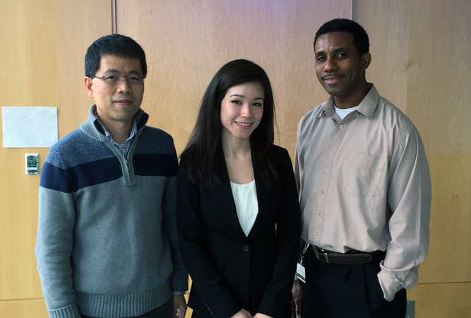

Tissue Engineering News
Tissue Engineering News
Stem Cell News
Ethan defends and passes his dissertation!
Posted on: June 2019

Congratulations to Ethan, who just defended his dissertation this past week! The title of his dissertation is: "Design, Manufacture, and Implementation of 3D-Printed Tissue Engineering Scaffolds Used with Stromal Vascular Fraction Cells for Craniofacial Bone Regeneration".
Ethan has contributed heavily to the bone regeneration projects in our lab, which has resulted in his co-authorship on seven manuscripts, six of which he was first author. He has also been extensively involved with organizing social events for the lab and BME department. Ethan will be missed by everyone, but we congratulate him for his success and wish him the best with his career!
Congratulations to Aine on receiving the Fullbright Fellowship!
Posted on: June 2019
Aine, a recent graduate of Hopkins' undergraduate BME program, received the Fullbright Fellowship for 2019-2020! She will do research at EPFL in Lausanne, Switzerland under the guidance of Professor Dominique Pioletti in the Laboratory of Biomechanical Orthopaedics. Her research project will focus on the development of hydrogel scaffolds for cartilage and ligament regeneration. A full press release of her award can be found here. We celebrated and gave our farewells to Aine in Little Italy this past week. We wish her all the best!
Lexi's article featured on the cover of Advanced Healthcare Materials!
Posted on: May 2019

Lexi's manuscript about the development of a platelet-derived growth factor delivery system for craniofacial bone regeneration was featured on the cover of Advanced Healthcare Materials. Shawna Snyder, a recent graduate of Hopkins Medicine's Medical and Biological Illustration program, designed the cover art. The full text article can be found at this link and high-resolution cover art at this link. Congratulations Lexi and Shawna!
Jordie and Ashley present and receive awards at the Society for Biomaterials Conference!
Posted on: April 2019
Jordie and Ashley both gave oral presentations at the Society for Biomaterials (SFB) Conference in Seattle, Washington! Jordie talk was titled, "Engineering 3D Skeletal Muscle Primed for Neuromuscular Regeneration Following Volumetric Muscle Loss", while Ashley's was titled "Tunable Oxygen Releasing, 3D-printed Scaffolds Improve In Vivo Osteogenesis". They both also received the SFB Orthopedic Biomaterials SIG Star Abstract Award, and Jordie received the Tissue Engineering SIG Travel Grant Award to fund her conference travel. We are proud of them both!
Warren inducted into the AIMBE College of Fellows!
Posted on: March 2019
Congratulations to Warren on being inducted into the American Institute for Medical and Biological Engineering (AIMBE) College of Fellows! More information about this honor can be found here and here.
Jordie, Sarah, and Lexi present at TEDCO's Entrepreneur Expo & Stem Cell Symposium
Posted on: October 2018
Jordie and Sarah presented their work in engineering skeletal muscle grafts using HPSCs, while Lexi presented on quantitative 3D light-sheet imaging of vascular structures in implanted bone grafts. Their abstracts are included at this link.
Jordie receives NRSA F31 fellowship!
Posted on: April 2018
Congratulations to Jordie for receiving the NIH NRSA F31 fellowship! She will receive funding for 2 years to work on engineering skeletal muscle constructs to treat volumetric muscle loss.
Ashley presents at Mid-Atlantic Biomaterials Day!
Posted on: March 2018
Ashley gave post and podium presentations at the Mid-Atlantic Biomaterials Day at JHU. Her presentations were titled, "Fabrication of 3D-printed, Biodegradable, Oxygen-releasing Scaffolds".
Justin defends his dissertation!
Posted on: February 2018

Congratulations to Justin, who successfuly completed his dissertation defense! Justin's research was focused on engineering a cardiac muscle patch using a tri-culture platform, and his thesis was titled, "Engineering Vascularized Cardiac Grafts for Myocardial Regeneration". We wish Justin the best of luck with his future career in science and medicine!
Grayson Lab Members Win Poster Presentation Awards
Posted on: December 2017
Congratulations to Ethan and Aine for their poster presentation awards! Ethan received 1st place for his presentation at the 2017 TERMIS-AM Conference, and Aine received 2nd place at the 2017 INBT Undergraduate Research Symposium.
Transplant Bioreactor Project Highlighted in Baltimore Sun
Posted on: October 2017
Our vascularized composite allograft (VCA) bioreactor project, which Sara and Kenny both work on, was highlighted in the Baltimore Sun. Read more about it here!
Ethan's Article is the "Most Read" in Tissue Engineering Part A
Posted on: April 2017
Ethan's article on comparing different 3D-printed scaffold compositions for bone regeneration was listed as the most read article in Tissue Engineering Part A! You can read the article online at this link.
Ashley and Lexi's Article Featured in Journal of Materials Chemistry B
Posted on: October 2016
Congratulations to Ashley and Lexi, whose review article was featured in Journal of Materials Chemistry B's "Hot Papers" collection. You can view the entire collection here!
"Recipe" for 3D-Printed Bone Featured in Hopkins Medicine
Posted on: October 2016

Our lab's technique in creating 3D-printed bone constructs was highlighted in Hopkins Medicine Magazine, in a feature called "Cooking Up Bone Replacement". View the "recipe" for 3D-printing bone here!
Farefell to Kember and Athenia!
Posted on: August 2016
Kember (left) and Athenia (right) ended their summer research projects by presenting at the C.A.R.E.S. symposium. We wish both the best with their future research endeavors!
Warren Featured in Hopkins Engineering Magazine
Posted on: July 2016
Warren's career in craniofacial bone engineering was highlighted by Hopkins Engineering Magazine!
Clara awarded Gilman Scholarship!
Posted on: May 2016
Clara Molineros (One of Sarah Somers' Undergraduates) was awarded a Gilman Scholarship to study abroad in Paris and Dakar this summer! Congratulations! She will be exploring the impact of French history and culture on modern-day Senegal.
Ben's Paper Featured by Hopkins Medicine
Posted on: May 2016
Ben's recent paper, published in ASC Biomaterials Science and Engineering, was featured by Hopkins Medicine. The paper investigated the effects of combining decellularized bone matrix and polycaprolactone on in vitro and in vivo bone regeneration.
Warren Gives TED Talk
Posted on: January 2016
Watch Warren give a TED talk on our lab's craniofacial bone tissue engineering research at TEDx Baltimore!
Grayson Lab Featured on ABC News
Posted on: October 2015
Warren was featured on Baltimore's ABC News to discuss about our lab's work on 3D printing!
Thread Summer Interns Win Poster Competition
Posted on: August 2015
Congratulations to Shamiara and Montez! They won the DAASI end of summer poster competition! Their poster included work they completed in lab this summer during their internship: cell transfection and 3D-printing.
Goodbye Michelleine!
Posted on: August 2015
We're sad to see Michelleine return to Trinidad! Here she is presenting her work at the end of summer symposium.
Summer Lunch
Posted on: July 2015
We celebrated the end of summer with a beautiful lunch on the harbor!
Dr. Grayson Wins Catalyst Award
Posted on: June 2015
Warren won one of the new Catalyst Awards for early-career Johns Hopkins researchers! Read more here and here.
Miguel Wins Social Venture Challenge at Clinton Global Initative University
Posted on: May 2015
Congratulations to Miguel winning the CGI U Social Venture Challenge! Read more here.
Warren Received a Young Investigator Award
Posted on: December 2014
Congratulations to Warren for being awarded the Young Investigator Award at TERMIS-AM 2014!
First Ph.D. Student (Daphne) Graduates!
Posted on: November 2014
Daphne was the first Ph.D. student to join the Grayson Lab back in Jan 2010. She is now the first to graduate! Congrats!
Ben Was Awarded a Graduate Fellowship
Posted on: August 2014
Congratulations to Ben for being awarded the NIH NRSA Pre-doctoral Fellowship!
Warren Selected for NAKFI Symposium
Posted on: May 2014
Congratulations to Warren on being selected to participate in the National Academies Keck Futures Initiative (NAKFI) symposium on Collective Behavior: From Cells to Societies.
Warren Received the NSF CAREER Award!
Posted on: May 2014
Warren Grayson was awarded the prestigious NSF CAREER Award. Congrats!!
Josh Placed 1st At Undergraduate Research Day
Posted on: April 2014
Congratulations to Josh for winning 1st place in the annual JHU-UMD undergraduate research day!
Highlighted in ORS News Release
Posted on: March 2014
A recent news release highlights research that Josh presented at the Orthopaedic Research Society annual meeting in New Orleans.
Featured on the Cover of Tissue Engineering: Part A... Again!
Posted on: September 2013

Daphne's recent paper was featured on the cover of the Sept 2013 issue of Tissue Engineering: Part A! The paper is titled "Platelet-derived growth factor and spatiotemporal cues induce development of vascularized bone tissue by adipose-derived stem cells".
Congrats to Warren & Pinar Who Both Received ASBMR Awards!
Posted on: August 2013
Warren was awarded the ASBMR Career Enhancement Award. Pinar was also awarded the 2013 ASBMR Muscle Symposium Young Investigator Travel Grant. Congrats to you both!
Erika & Arda Each Received Research Awards. Congrats!
Posted on: March 2013
Congrats to Erika who was awarded the NSF Graduate Research Fellowship! She will begin her graduate studies at Duke in the fall! Also, congrats to Arda who was awarded the Vredenburg Scholarship to spend the summer in the Karolinska Institute in Sweden!